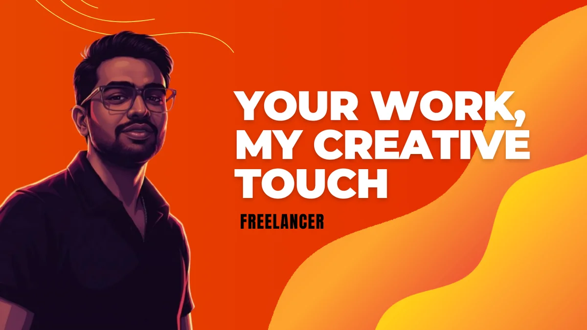

Visualizes data to tell impactful stories...
Because if the data does not impress you what else can?
I'm a Python Developer|
Currently, I am a B.Tech CSE Student @ Bharath University
About Me
I'm Chaithu, a highly motivated B.Tech Computer Science student specializing in Python development, data analytics, and machine learning. I build end-to-end ML projects and deploy interactive dashboards that transform complex data into actionable insights.
With expertise in Python, Machine Learning, Data Analysis, Power BI, and Streamlit, I create intelligent solutions that solve real-world problems. As a curious and self-motivated learner, I continuously explore new technologies and methodologies to deliver impactful data-driven applications.
Education
B.Tech CSE @ Bharath University
Focus
Python, ML & Data Analytics
Goal
Solving Real-world Problems with AI
I'm currently looking to join a cross-functional team
that values improving people's lives through accessible design
Background
Experience & Certifications
Data Analytics Process Automation
EduSkills / Alteryx (AICTE)
Jan 2025 - Mar 2025
Comprehensive certification in data analytics and process automation using Alteryx platform.
Machine Learning with Python
Embrizon Technologies (AICTE)
Nov 2024 - Jan 2025
Intensive training in machine learning algorithms, model development, and deployment using Python and scikit-learn.
Industrial Training – Inspection Team
RANE
Dec 2022 - Jun 2023
Collaborated with inspection team to ensure quality compliance of 100+ components weekly. Identified deviations, supporting a 15% reduction in rework cases.
Education
B.Tech in Computer Science
Bharath University, Chennai
Aug 2024 - Apr 2026
Coursework focuses on data analytics, machine learning, and software engineering with hands-on project experience.
Diploma in Mechanical Engineering
KITS Institute of Technology and Science
2021 - 2023
Program emphasized mechanical systems, industrial training, and applied engineering concepts with practical exposure.
Featured Projects


Freelance & Creative Work
Professional Presentation Design & Creative Services
Combining analytical skills with creative design to deliver impactful presentations and documents.

Presentation Work Repository
A comprehensive collection of my freelance presentation projects across various domains. Includes corporate decks, academic research, and creative pitches.
Contact
I'm currently looking to join a cross-functional team that values improving people's lives through accessible design, or have a project in mind? Let's connect.